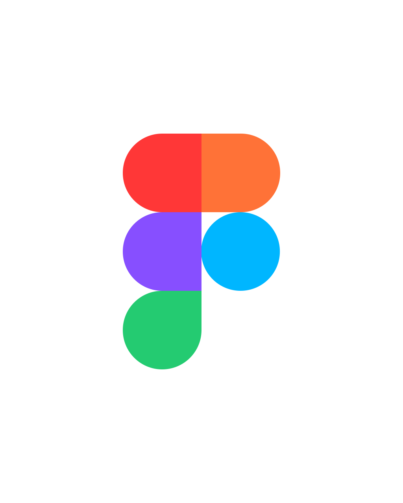

Rechtenvrije illustraties voor toegangkelijke overheidscommunicatie.
Samen met gemeente Westland ontwikkelden we deze illustratieset speciaal voor overheidscommunicatie: 40+ illustraties, in te kleuren in de huisstijl van je eigen organisatie.
Maak er gebruik van
Open in Figma bestand

Ontwikkelaars kunnen iconen rechtstreeks uit de repository laden, waardoor de set altijd actueel blijft op websites.
Bekijk de repositoryToken Studio-bestand op GitHub

Onder leiding van Frameless zijn er van de regular iconen webcomponenten gemaakt, waardoor deze eenvoudig te gebruiken zijn in Common Ground-projecten.
Bekijk de documentatieDownload volledige set
Liever alles in één keer binnenhalen? Download de complete set als ZIP-bestand.
Download de complete set